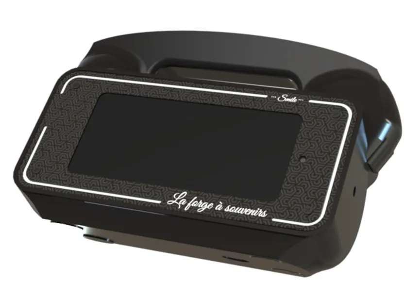

Enregistrer des messages vidéo et programmer leur révélation à une date choisie.
AndroidCapteur magnétiquePCB de façadeImpression SLA

Le besoin
Enregistrer des messages vidéo et programmer leur révélation à une date choisie.
L’intervention
Intégration du smartphone, de la détection magnétique, de l’éclairage et du boîtier imprimé en 3D.
Le résultat
Un système conçu pour l’enregistrement et l’envoi différé, présenté en phase de tests utilisateurs.
Concept
Ce dispositif permet aux invités de laisser un message vidéo destiné à être révélé à une date ultérieure précise. L’objectif : raviver l’émotion de l’événement (mariage, baptême, anniversaire) plusieurs années plus tard. Jusqu'à 3 ans de stockage sont possibles.
Chaque message est enregistré dans une capsule numérique. L'invité choisit lui-même la date d’envoi lors de l’enregistrement. Exemple : un an après l’événement, pour des messages du type :
« Salut, ça fait un an que j’ai enregistré ce message… je me doute qu’à cette date vous avez sûrement déjà agrandi la famille. Profitez bien, et souvenez-vous de cette journée incroyable ! »
La diffusion des messages est automatisée grâce à Google Apps Script : un lien vidéo sécurisé est envoyé à la date prévue, accompagné d’un mail personnalisé.
Conception et Développement
Le décroché est détecté par capteur magnétique, supprimant les pièces mécaniques fragiles et améliorant la fiabilité. Le cœur du système repose sur un smartphone Android (Samsung A51) associé à une carte électronique sur mesure.
Celle-ci détecte le décroché, allume les LED COB et déclenche l’application Android. Un timer coupe l’alimentation après 10 minutes d’inactivité pour préserver la batterie.
Une vidéo d’introduction guide l’utilisateur. Ensuite, il enregistre son message, qui est stocké localement. À la fin, il sélectionne une date d’envoi différé.
Design et Fabrication
Le design s'inspire d’un ancien combiné téléphonique. L’objectif était de créer un objet intuitif et engageant, simple, rétro et surtout compact pour faciliter le transport.
La plaque frontale du système est en réalité un PCB. Ce choix présente un double avantage : une finition argentée nette et élégante, et une intégration directe des connexions électroniques. Une solution à la fois esthétique et économique.
Le boîtier a été imprimé en 3D résine (SLA), un choix motivé par la qualité de finition, la solidité, mais aussi le poids final du système, qui assure une bonne stabilité. Ce rendu est bien plus massif et stable que ce qu’aurait permis une impression filament.
Le système a été pensé dès le départ pour être low cost, facile à produire, et facilement réplicable. Il peut être expédié dans toute la France à faible coût, avec une logistique simple.
Prochaine étape
La capsule temporelle n’est pas encore disponible à la location, mais sa diffusion est imminente. Des tests utilisateurs sont en cours pour valider l’ergonomie du système, affiner l’expérience d’enregistrement, et garantir la fiabilité des envois différés.
Une campagne de pré-lancement est en préparation. Elle visera les organisateurs d'événements, les agences de mariage et les particuliers souhaitant offrir une expérience mémorable à leurs invités.
Si vous êtes intéressé par la location ou la distribution du produit, n'hésitez pas à nous contacter pour être tenu informé du lancement.